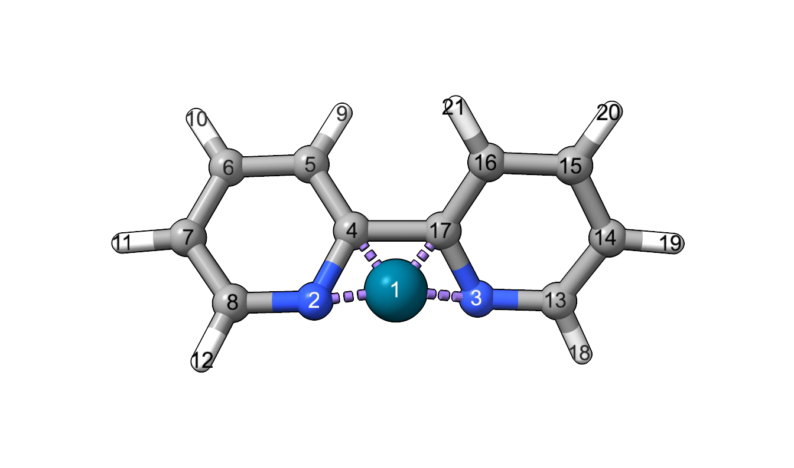
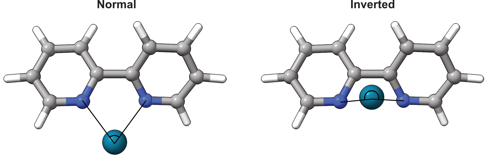

Bite angle#
The bite angle is calculated as the angle between the two chelating ligand atoms and the metal atom of a bidentate ligand. [1]
Module#
The BiteAngle class calculates the bite angle by from the coordinates, the index of the metal atom and the indices of the two coordinating atoms.
>>> from morfeus import BiteAngle, read_xyz
>>> elements, coordinates = read_xyz("bpy.xyz")
>>> ba = BiteAngle(coordinates, 1, 2, 3)
>>> ba.angle
77.29254645757716
For more detailed information, use help(BiteAngle) or see the API:
BiteAngle
Inverted bite angles#
The bite angle can become ‘inverted’ if it goes beyond 180°. This cannot be
detected automatically, so the user has to supply a ref_vector that should
point in the ‘direction’ of the ligand. As a convenience, the vector can be
constructed automatically from the metal atom to the geometric mean of a set of
given ref_atoms.
In the example below, the bipyridine ligand has been artificially distorted to give an inverted bite angle. The metal atom index is 1, and the indices of the coordinating atoms are 2 and 3. The reference vector is constructed from the metal atom to the geometric mean of the two reference atoms, 4 and 17.
{kind=link}

>>> elements, coordinates = read_xyz("bpy_inverted.xyz")
>>> ba = BiteAngle(coordinates, 1, 2, 3, ref_atoms=[4, 17])
>>> ba.angle
198.39710046622645
>>> ba.inverted
True
Command line script#
The basic functionality is available through the command line script.
$ morfeus bite_angle bpy.xyz - 1 2 3 - angle
77.29254645757716
$ morfeus bite_angle bpy_inverted.xyz - 1 2 3 --ref_atoms='[4, 17]' - angle
198.39710046622645
Background#
The bite angle has a long history of use as a ligand descriptor. [1]. ᴍᴏʀғᴇᴜs extends to inverted bite angles, which correspond to a bite angle above 180°.
{kind=link}

References